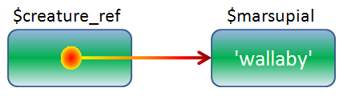
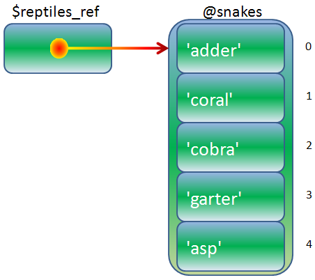
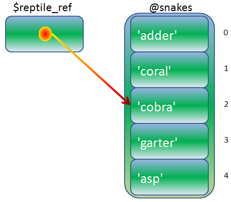

References
AAHCClick on A to make all fonts on the page smaller.
Click on A to make all fonts on the page larger.
Click on HC to toggle high contrast mode. When you move your mouse over
some bold words in high contrast mode, related words are automatically highlighted. Text is shown
in black and white.
Lesson Objectives
When you complete this lesson, you will be able to:
“County library? Reference desk, please. Hello? Yes, I need a word definition. Well, that's the
problem. I don't know how to spell it and I'm not allowed to say it. Could you just rattle off all the swear
words you know and I'll stop you when...Hello?”
-Bill Watterson, Calvin & Hobbes
Welcome to lesson seven, an exploration of references in Perl.
References to Scalars
I've claimed, "this is a really important and useful feature of Perl!" so often, I must sound
like a cross between an infomercial presenter and a politician. But trust me, all the great stuff I've told you about Perl is true!
But wait—there's more! Here's yet another great Perl feature: references.
References are scalars that point, or refer to,
data somewhere else. When you want use the values they point to, you dereference the references.
So far you've seen that scalars can contain strings, numbers, or filehandles (or
directory handles, which are a lot like filehandles). But a reference is an entirely new element
for a scalar to contain.
References unlock the door to all the kinds of data representation and
processing that you can do in Perl. The most advanced Perl programs depend on references. We'll spend most
of the rest of this course learning about references in all their glory, which will enable you to
write programs for complex data manipulation. And, if you go on to our fourth Perl course,
we'll use that knowledge of references to do object-oriented programming for
everything from e-mail to databases. Perl references are a really big deal!
We'll start with the basics; making and using references to scalars. But first, let me tell you
what a Perl reference is not: it is not the same as a C/C++ pointer. (Don't worry if you're not familiar with
C or C++.) Even though I will be using diagrams containing arrows, and I may use the phrase "points to" when
talking about references, a reference in Perl
can be used for only one thing: getting back the thing to which it points. You cannot perform "pointer
arithmetic" on Perl references (if you're not familiar with pointer arithmetic, that's okay too).
In order to make a reference to a named scalar in our code, we type a backslash
before the scalar; the result of that expression is the reference to that scalar:
At first it may seem odd to use the backslash as a operator for forming a reference; so far we've only seen the backslash
as an escape character or part of a digraph, but that was from inside of strings or regexes. Now our
backslash occurs within program code. Let's try an example. Create scalar_ref.pl in your
/perl3 folder as shown:
CODE TO TYPE:
#!/usr/bin/perl
use strict;
use warnings;
my $marsupial = 'wallaby';
my $creature_ref = \$marsupial;
print $$creature_ref, "\n";
 and run it as shown:
and run it as shown:
INTERACTIVE SESSION:
code:~$ cd perl3
cold:~/perl3$ ./scalar_ref.pl
wallaby
Okay, so that may not have been super exciting, but hey—we gotta start somewhere, right? In addition
to taking a reference, we've shown you what to do with it: you can get back the scalar it refers to by
putting a dollar sign ($) in front of the reference, like this:
At first, that construction may seem odd too because it brings to mind the special variable
$$ (which is the current process ID). Or it may just seem odd because, like the backslash, we haven't
thought of a dollar sign as an operator before. And yet here both of those symbols are being pressed into service as operators. The
different syntactical contexts in which they are used allow those symbols to be used for varied purposes.
Here's a visual aid for the reference to help makes this a bit more clear:

In this diagram the reference arrow points to the data that is stored in the variable with
the name $marsupial; not at the name $marsupial itself. This distinction will become increasingly important as we
go on through the lessons.
Now, if you're curious—and I hope you are—you probably already wondered what's inside of that orange blob in the
$scalar_ref and what you can do with it. So let's do some experimentation
with it to see what happens. (I encourage you to try this kind of thing yourself all the time—be fearless! You can't
break our system. The worst that could happen is that you encounter something strange and you have to
ask your instructor for help. No problem.) Modify the program as shown:
CODE TO TYPE:
#!/usr/bin/perl
use strict;
use warnings;
my $marsupial = 'wallaby';
my $creature_ref = \$marsupial;
print $$creature_ref, "\n";
print "\$creature_ref = $creature_ref\n";
and run it as shown:
INTERACTIVE SESSION:
cold:~/perl3$ ./scalar_ref.pl
wallaby
$creature_ref = SCALAR(0x94a26fc)
That's really interesting! I bet you didn't see that coming. It's Perl's way of saying, "This is a reference
to a scalar." (The hexadecimal number may be different on your screen, that's okay.)
We just printed out a scalar as a string (by interpolating it inside double quotation marks).
I wonder if it would look different if we printed it as a number? Some special
variables in Perl can behave differently when treated as numbers instead of strings. We can force Perl to
interpret a scalar as a number by performing an arithmetic operation on the scalar that expects it to be a number,
but won't change the value of that number. Adding or subtracting zero, or multiplying or dividing by one
will do that. Modify scalar_ref.pl as shown:
CODE TO TYPE:
#!/usr/bin/perl
use strict;
use warnings;
my $marsupial = 'wallaby';
my $creature_ref = \$marsupial;
print $$creature_ref, "\n";
print "\$creature_ref = $creature_ref\n";
print "\$creature_ref = ", $creature_ref + 0, "\n";
and run it as shown:
INTERACTIVE SESSION:
cold:~/perl3$ ./scalar_ref.pl
wallaby
$creature_ref = SCALAR(0x928d6fc)
$creature_ref = 155854588
Look at that: the reference is also a number. And you're probably thinking, "Is it the same number
as the hexadecimal string in parentheses?" You can perform this test to find your answer.
Modify scalar_ref.pl as shown:
CODE TO TYPE:
#!/usr/bin/perl
use strict;
use warnings;
my $marsupial = 'wallaby';
my $creature_ref = \$marsupial;
print $$creature_ref, "\n";
print "\$creature_ref = $creature_ref\n";
print "\$creature_ref = ", $creature_ref + 0, "\n";
printf "\$creature_ref = %x\n", $creature_ref;
(We no longer need to add zero because the %x format specified in
printf() will impose a numeric context.)
and run it as shown:
INTERACTIVE SESSION:
cold:~/perl3$ ./scalar_ref.pl
wallaby
$creature_ref = SCALAR(0x928d6fc)
$creature_ref = 928d6fc
That's not so surprising. If Perl has a cryptic hexadecimal number in a reference's string value and
a cryptic number associated with the same reference's numeric value, it makes sense that they would be the same
number.
I mentioned earlier that pointer arithmetic was pointless with references. Let's add to it and see what happens. Modify scalar_ref.pl
as shown:
CODE TO TYPE:
#!/usr/bin/perl
use strict;
use warnings;
my $marsupial = 'wallaby';
my $creature_ref = \$marsupial;
print $$creature_ref, "\n";
print "\$creature_ref = $creature_ref\n";
printf "\$creature_ref = %x\n", $creature_ref;
my $augmented = $creature_ref + 32;
printf "\$creature_ref + 32 = %x\n", $augmented;
print "\$augmented = $augmented\n";
print "\$$augmented = ", $$augmented, "\n";
and run it as shown:
INTERACTIVE SESSION:
cold:~/perl3$ ./scalar_ref.pl
wallaby
$creature_ref = SCALAR(0x9bb96fc)
$creature_ref = 9bb96fc
$creature_ref + 32 = 9bb971c
$augmented = 163288860
Can't use string ("163288860") as a SCALAR ref while "strict refs" in use at ./scalar_ref.pl line 19.
So what happened? As soon as we added something to the reference, the result was a plain old number; there
was no magic SCALAR(0x...) printed when we put it in a double-quoted string. Attempting to
dereference that result produced an error.
The reference has only one really useful ability and that is to get back the thing
it references, by dereferencing it. When our program changed, even the number that was associated with the reference changed. And you
may have noticed
that I have never referred to that number as an "address." It may look like an address, but you
can't actually do anything with addresses in Perl. The only guarantee is that references to the same thing will
stringify or numerify to the same values, and references to different things will not. Modify
scalar_ref.pl as shown here:
CODE TO TYPE:
#!/usr/bin/perl
use strict;
use warnings;
my $marsupial = 'wallaby';
my $creature_ref = \$marsupial;
print $$creature_ref, "\n";
print "\$creature_ref = $creature_ref\n";
printf "\$creature_ref = %x\n", $creature_ref;
my $augmented = $creature_ref + 32;
printf "\$creature_ref + 32 = %x\n", $augmented;
print "\$augmented = $augmented\n";
print "\$$augmented = ", $$augmented, "\n";
my $ref_copy = $creature_ref;
print "\$ref_copy = $ref_copy\n";
my $australian = 'wallaby';
my $aussie_ref = \$australian;
print "\$aussie_ref = $aussie_ref\n";
and run it as shown:
INTERACTIVE SESSION:
cold:~/perl3$ ./scalar_ref.pl
wallaby
$creature_ref = SCALAR(0x93276fc)
$ref_copy = SCALAR(0x93276fc)
$aussie_ref = SCALAR(0x933b78c)
The numbers may be different for you, but the important thing to note is that the references
$creature_ref and $ref_copy stringify identically (you can use
eq to test whether they refer to the same thing); and $creature_ref and
$aussie_ref stringify to different strings, because they point to different scalars, even though
the scalars they point to happen to have the same value.
Okay, so that's enough about the mechanics of references for now; let's get busy working. We're going to focus more
or less exclusively now on taking references and dereferencing. References to scalars are good, but
references to arrays even better! Let's learn about those.
References to Arrays
For our next example, we'll use a reference to an array with the backslash operator, just like we did before:
Create array_ref.pl in your /perl3 folder as shown:
CODE TO TYPE:
#!/usr/bin/perl
use strict;
use warnings;
my @snakes = qw(adder coral cobra garter asp);
my $reptiles_ref = \@snakes;
my $index;
printf "%d $_\n", $index++ for @$reptiles_ref;
and run it as shown:
INTERACTIVE SESSION:
cold:~/perl3$ ./array_ref.pl
0 adder
1 coral
2 cobra
3 garter
4 asp
Perl is very consistent in its reference syntax: to dereference a reference to an array, put an at sign
(@) in front of it; this will return the contents of the array. Here's a graphic representation to help you visualize
and understand array references:

When you have a reference to something, it provides you with a way to change that relative data. Create
ref_mod.pl in your /perl3 folder as shown:
CODE TO TYPE:
#!/usr/bin/perl
use strict;
use warnings;
{
my $marsupial = 'wallaby';
my $creature_ref = \$marsupial;
my @snakes = qw(adder coral cobra garter asp);
my $reptiles_ref = \@snakes;
modify_refs( $creature_ref, $reptiles_ref );
print "\$marsupial = $marsupial\n";
print "\@snakes = @snakes\n";
}
sub modify_refs
{
my ($scalar_ref, $array_ref) = @_;
$$scalar_ref .= ' stew';
pop @$array_ref;
} and run it as shown:
INTERACTIVE SESSION:
cold:~/perl3$ ./ref_mod.pl
$marsupial = wallaby stew
@snakes = adder coral cobra garter
Even from deep inside that subroutine, your reference was able to modify $marsupial
and @snakes through the references to them, even though the variables they referred to were no
longer in scope during that subroutine. Remember, references point to storage: the data
stored in the variable for which you've taken a reference.
Everywhere you can use a scalar variable like $marsupial, you can use a dereferenced
reference to a scalar: $$creature_ref. In the subroutine above we copied the reference
$creature_ref into $scalar_ref (it still points to the same thing—we
established that behavior earlier) and we were able to use the dereferenced reference as an lvalue
(an lvalue is an expression that you can write on the left hand side of an assignment statement; it
defines a specific memory address of a variable) to
modify the original data. The same goes for the array reference.
You can use an array reference anywhere you'd have the name portion of an array (the identifier that
comes after the @ sigil—a sigil is the bit of punctuation that tells Perl what sort of variable is being used) in code;
this program gives some examples of those constructions so you
can see what I mean. Create array_ref_ex.pl in your /perl3 folder as shown:
CODE TO TYPE:
#!/usr/bin/perl
use strict;
use warnings;
my @countries = qw(Sudan Sweden Switzerland Surinam Singapore);
my $countries_ref = \@countries;
print "Array in scalar context: " . @countries . "\n";
print "Array ref in scalar context: " . @$countries_ref . "\n";
print "Array in list context: ", @countries, "\n";
print "Array ref in list context: ", @$countries_ref, "\n";
print "Third member of array: $countries[2]\n";
print "Third member via array ref: $$countries_ref[2]\n";
print "Index of last element of array: $#countries\n";
print "Index of last element via array ref: $#$countries_ref\n";
and run it as shown:
INTERACTIVE SESSION:
cold:~/perl3$ ./array_ref_ex.pl
Array in scalar context: 5
Array ref in scalar context: 5
Array in list context: SudanSwedenSwitzerlandSurinamSingapore
Array ref in list context: SudanSwedenSwitzerlandSurinamSingapore
Third member of array: Switzerland
Third member via array ref: Switzerland
Index of last element of array: 4
Index of last element via array ref: 4
Do you see what I mean? If you want to know how to do a particular operation with an array reference,
just ask yourself how you'd do it with an array named, for instance, @foo, and replace the foo
part of the construction with the reference.
Take another look at the graphical representation of the array reference. I made sure to draw a
distinction between an array and the scalars that are contained within it. What do you suppose this
diagram represents?:

That's a reference to an array element rather than the whole array. So what kind of reference is
it? It's a reference to a scalar! Create element_ref.pl in your /perl3 folder as
shown:
CODE TO TYPE:
#!/usr/bin/perl
use strict;
use warnings;
my @snakes = qw(adder coral cobra garter asp);
my $reptile_ref = \$snakes[2];
print "\$reptile_ref looks like $reptile_ref\n";
$$reptile_ref = 'boa';
print "\@snakes = @snakes\n";
and run it as shown:
INTERACTIVE SESSION:
cold:~/perl3$ ./element_ref.pl
$reptile_ref looks like SCALAR(0x9e2b7a4)
@snakes = adder coral boa garter asp
The reference $reptile_ref is a scalar reference, and we can use it to modify
the element of the array to which it points. (We cannot use our reference to get at the array itself or any other
element of the array.)
Anonymous References
You may have noticed that I tend to repeat myself. It isn't because I don't have confidence in your ability
to catch information the first time around. I repeat important information to help you retain it—and there's a lot of it.
So let me reiterate here,
references point to the data that is stored in a scalar or array, not to the
name of that scalar or array. In fact, given a reference, you cannot retrieve the name of the thing that it
points to, only the data stored in it. And frequently we write subroutines that expect one or more
references in their arguments, so we end up passing references around our code like ordinary data. So, what
if we don't actually need a named variable at all, because we plan to use only references?
Suppose we have a subroutine and its purpose is to return an array reference for later use.
Create anon_ref.pl in your /perl3 folder as shown:
CODE TO TYPE:
#!/usr/bin/perl
use strict;
use warnings;
my $day_ref = make_day_ref( 'German' );
print "Der dritte tag der woche ist $$day_ref[2]\n";
sub make_day_ref
{
my $language = shift;
my @english_names = qw(Sunday Monday Tuesday Wednesday Thursday Friday Saturday);
my @french_names = qw(Dimanche Lundi Mardi Mercredi Jeudi Vendredi Samedi);
my @german_names = qw(Sonntag Montag Dienstag Mittwoch Donnerstag Freitag Samstag);
if ( $language eq 'English' )
{
return \@english_names;
}
elsif ( $language eq 'French' )
{
return \@french_names;
}
elsif ( $language eq 'German' )
{
return \@german_names;
}
else
{
die "Unrecognized language $language";
}
}
and run it (you know what to do):
INTERACTIVE SESSION:
cold:~/perl3$ ./anon_ref.pl
Der dritte tag der woche ist Dienstag
This code could be a good start to internationalizing a program. But look how long our
routine make_day_ref is. Essentially it's just defining data. So, what's the point in
defining the names @english_names, @french_names, and so on, when we only use them once, in
order to take a reference?
The answer lies in a new piece of Perl syntax, the anonymous array reference constructor. That's quite
a mouthful! The anonymous array reference constructor is an expression that returns a reference to
an array that we never bothered putting into
a named variable before, so we put square brackets around the
list we want in that array instead, like this:
Let's see that at work; modify anon_ref.pl as shown:
CODE TO TYPE:
#!/usr/bin/perl
use strict;
use warnings;
my $day_ref = make_day_ref( 'German' );
print "Der dritte tag der woche ist $$day_ref[2]\n";
sub make_day_ref
{
my $language = shift;
my @english_names = qw(Sunday Monday Tuesday Wednesday Thursday Friday Saturday);
my @french_names = qw(Dimanche Lundi Mardi Mercredi Jeudi Vendredi Samedi);
my @german_names = qw(Sonntag Montag Dienstag Mittwoch Donnerstag Freitag Samstag);
if ( $language eq 'English' )
{
return \@english_names [ qw(Sunday Monday Tuesday Wednesday Thursday Friday Saturday) ];
}
elsif ( $language eq 'French' )
{
return \@french_names [ qw(Dimanche Lundi Mardi Mercredi Jeudi Vendredi Samedi) ];
}
elsif ( $language eq 'German' )
{
return \@german_names [ qw(Sonntag Montag Dienstag Mittwoch Donnerstag Freitag Samstag) ];
}
else
{
die "Unrecognized language $language";
}
} and run it. The result should be the same as before. But we've
made the code shorter! Now we don't need to think up variable names just to be able to construct
references.
The anonymous array ref constructor may look odd; we're used to seeing square brackets used to
delimit array indexes. Don't worry, Perl can tell when you're using them for this purpose.
Now you may be wondering whether there is an anonymous scalar ref constructor. There is, but
we don't often have a need for them, so I'll just show it to you briefly:
That's right, you just put a backslash in front of any literal value to which you want a
reference. For instance:
OBSERVE:
$e_ref = \2.71828183;
$name_ref = \"Peter";
These anonymous scalar references are immutable (or
"constant," if you like); you can't change them. That quality can be useful in certain circumstances. Try this one-liner:
INTERACTIVE SESSION:
cold:~/perl3$ perl -le '$s_ref = \"four"; print $$s_ref; $$s_ref = 42'
four
Modification of a read-only value attempted at -e line 1.
That is not true of anonymously-constructed array references:
INTERACTIVE SESSION:
cold:~/perl3$ perl -le '$a_ref = [ 10..20 ]; print "@$a_ref"; $$a_ref[5] *= 2; print "@$a_ref"'
10 11 12 13 14 15 16 17 18 19 20
10 11 12 13 14 30 16 17 18 19 20
Finally, here's what happens when you stringify (in this case, by printing) an array ref:
OBSERVE:
cold:~/perl3$ perl -le '$a_ref = [ 10..20 ]; print $a_ref'
ARRAY(0x8cf2158)
There's no real use to printing out a reference, but
sooner or later you'll make the mistake of using a reference
where you meant to use a scalar, and you'll see a string like that instead. But this way you'll know
what it means.
We've only just begun to cover references and you can see already that they are the keys to
"packaging" data to pass around your program. It gets even better from here!
Once you finish the lesson, go back to the syllabus to complete the homework.